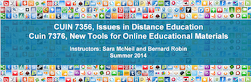

I took the instructions for this assignent to heart and created a presentation for
It is an overview that identifies the Web 2.0 tools that we all use at home and at work followed by a recommendation that we use Voicethread to get patient feedback on newly created patient education materials.finalproj from Elizabeth Brackeen on Vimeo.